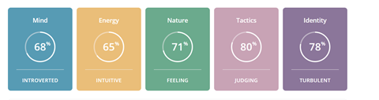
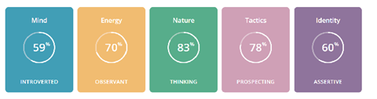
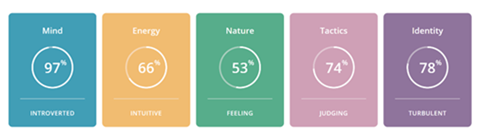
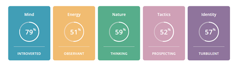

Team Mean O'Chutoy
Assessment 3: Our IT Project
Group GithubMS Teams Meetings
04/05/21
Agenda /
Meeting Recording /
Actions
09/05/21
Agenda /
Meeting Recording /
Actions
18/05/2021
Agenda /
Meeting Recording /
Actions
Sean Atherton
Student Number: S3893785
Student Email: S3893785@student.rmit.edu.au
I was born in Queensland (Australia), my parents and I moved to Melbourne (Victoria) in 2003, when I was roughly 3 years old.
I have spoken English all my life and unfortunately, I do not know how to speak any additional languages, maybe if I ever travel overseas in the future, I’ll try to learn one.
I regularly talk with friends online to either play video games together or just to catch up and chat.
Before the pandemic I was occasionally going on trips with friends and family throughout Victoria, hopefully, that changes in 2021.
Myers-Briggs Results

Career Plan
Job Title: Cyber Security Analyst
To get myself to the point of meeting the requirements for a Cyber Security Analyst position, I would first plan on completing my Bachelor of Information Technology and then go about obtaining any relevant industry certificates such as CompTIA Certs: Net+ and Sec+. For recommendations on industry certificates for cybersecurity and IT security professionals, refer to information maintained by CompTIA (CompTIA, 2018) (CompTIA, n.d). During my studies or after, I plan to start getting some industry experience in roles with transferable skills and knowledge to Cybersecurity Analyst positions.
Jack Holliday
Student Number: S3864772
Student Email: S3864772@student.rmit.edu.au
My interest in I.T started at a young age, constantly fighting with my brothers for access to the computer… (mostly playing games).
It was not until I had finished school and started working when I had obtained the first computer that I could call my own, but I still always had technology around be it phone, social media etc.
I expect to learn a lot about the different pathways within I.T. Working in the industry. That would help build my helpdesk role I have chosen the generalized I.T degree to help broaden my horizons and narrow down what I would like to do.
Myers-Briggs Results

Career Plan
Job Title: Now TBD
I change my career plans every week. It honestly depends on what the topic is that we are currently discussing that week. I believe this course will open my eyes to the type of fields that reside in IT and how far it can go. Basically, there is a life outside of just exchange and active directory... Regardless of if my IT career plan changes, I believe the plan for it will remain the same. If I continue to work and learn while obtaining a higher level of education, I can then specialise in the area I am working toward by continuing to study in the fields that I like and obtaining the necessary qualifications as required.
Steph Newland
Student Number: s3904486
Student Email: s3904486@student.rmit.edu.au
I was born and raised in here in Australia, however, due to my father’s nationality, I am technically half-Australian, half-German. Due to a chronic illness, I completed my ATAR in the year after I was supposed to graduate and have since studied a Bachelor of Creative Industries at ECU. I paused these studies this year to commence at RMIT as I wanted to move into a degree that I thought was better suited to the career I aspire to have in the future. I got my love of technology from my father, who is always tinkering around in his garage, whether it be with his car, a radio, or even our old PlayStation 1. IT has always been something I’ve been interested in, and as I’ve grown older and spent more time developing my skills and passions, I’ve realised it was the industry I wanted to pursue.
Myers-Briggs Results

Career Plan
Job Title: Cyber Security Analyst
There are a few requirements I must fulfil to become a Cyber Security Analyst. Firstly, I will need to complete the Bachelor of Information Technology that I will be completing through RMIT. From there, I will meet the requirements to be eligible for the Cyber Security program at ECU. I can either work towards a Graduate Certificate of Cyber Security or study further towards a specialisation field, with a Bachelor of Counter Terrorism Security and Intelligence (Cyber Security).
Some units from both of these will fall under Recognised Prior Learning due to the overlap with the bachelor's degree (hopefully) attained, lightening my workload and allowing me to work towards any required industry-standard certifications at the same time. These would include the CompTIA Certificates Security+ and Network+.
CompTIA A+ is an entry-level certificate that might provide resourceful information before completing either of these two. However, depending on time and practicality, it is not a prerequisite for the others mentioned. After my studies and entering the workforce, I plan to continue developing my general programming and transferrable skills. After the recommended 3-4 years of industry work experience (CompTIA, n.d.), I can then undertake the three CompTIA Cybersecurity specific certifications (CompTIA CySA+, CompTIA CASP+ and CompTIA PenTest+) to further my comprehension and abilities as a cybersecurity analyst.
Joshua Chuang
Student Number: s3729939
Student Email: s3729939@student.rmit.edu.au
Hi, I’m Josh and I am at 21-year-old student currently in my first year studying I.T online at RMIT. I was born and raised in Australia, but my both my folks are from a small island nation called Taiwan. As such I speak both English and Mandarin with the former being the language I most commonly use and the latter being what I mean use to communicate with my parents. I have always enjoyed tinkering with technology and one of the more interesting things about myself is that I enjoy fixing iPhones. The first iPhone I fixed was my iPhone 3G and have experience repairing all iPhones up to the 8th generation. Outside of I.T my main hobby is photography. I have a keen interest in shooting night photography, landscapes, and portraits.
Myers-Briggs Results

Career Plan
Job Title: Now TBD
Honestly, I'm still unsure about a solid career plan as it is still so early and there are a lot of topics and subject that we’ve yet to cover. My current plan would be to continue studying at RMIT and to learn more about the field of IT before I find something that I feel that I’m either interested in or am good at. I do however have 2 fields that I’m particularly interested in design and cloud services. If I was to go into design, I would need to undertake more subjects that are design-oriented and then build up a portfolio which I could then use to get a design internship with a company. If I was to lean more towards cloud engineer, I would need to learn programming, networking and database-related skills which I could then use to find a job in the cloud industry.
Liam Oloughlin
Student Number: s3908839
Student Email: s3908839@student.rmit.edu.au
Hello! I am Liam, I am 20 years old, and I am currently enrolled at RMIT completing some core and foundation subjects to move into a Bachelor of IT. I am full Australian, born and raised here. I have had a passion for gaming ever since I was super young, this sparked a big interest in mostly IT related things, it also helped that my Dads career revolves around IT too. I don’t have to many hobbies outside of gaming, but I do really like to learn languages, Currently I have only learnt Japanese, but I do want to learn more.
Myers-Briggs Results

Career Plan
Job Title: IT Networking Support
To be accepted as an IT Networking Support agent, I would need to get certain certificates and qualifications. I plan to finish my Bachelor of IT as a base, and then I would find and start gathering the appropriate certificates such as various CISCO Networking Certifications. I would also check out the CompTIA Networking+ Certifications as well. As my Dad is already in the field, I have the ability to gain some work insight and experience, which can increase my chances for future employment in the field.
Mia Vasiliadis
Student Number: s3909174
Student Email: s3909174@student.rmit.edu.au
I was born in Adelaide but moved to Cairns in 2000 when I was less than a year old and lived there for 15 years, before moving back to South Australia. After graduating, I moved to Melbourne in order to pursue higher education study. I have completed a Cert 3 and 4 in Information Technology through TAFE SA, focusing on the Website Development branch. My interest in IT started when I got a PS2 as a kid and wanted to try games on the PC, which led to me building my own when I was 11. Although I was initially interested in hardware and the physical components of IT, it has grown into me wanting to know about every aspect. I spend most of my free time playing games and talking to my friends.
Myers-Briggs Results

Career Plan
Job Title: Full Stack Developer
In order to become a Full Stack Developer, I need to learn both front and back-end programming languages while acquiring certain qualifications such as the Bachelor of Information Technology degree. A Computer Science degree would be a much better qualification, but unfortunately, I do not meet the requirements to do it, which could be something I look at after completing my Bachelor of IT.
Team Career Plans
Similarities and Differences in Positions
Most of the team’s positions all require formal education in an IT degree of sorts, industry certs, or a portfolio of work to be able to get into that role. However, when it comes to the certifications and requirements this is where things don’t tend to overlap in most cases, although there are two team members with identical Cyber Security positions (Cyber Security Analysts) every other team member has an almost entirely unique position for their ideal job.
Common Elements in Career Plans
A common element found in all of the team's career plans is the desire to complete their current study of the Bachelor of IT to with the goal either been to gain further insight into IT as a whole to get a better sense of their place in it and or to form a base to then jump into getting the relevant the industry and field-specific certifications for their ideal job. Still having a well-structured and solid plan with goals to work towards for their chosen ideal job while still been open to change is another aspect that can be found in the team's career plans.
Differences in Career Plans
The main differences in the team’s career plans are the specific certs and prerequisite job titles they have planned out for each of the ideal jobs.
Group Processes
The group worked as required for Assignment 2, all of the work and requirements were completed by the end of the assignment period and all the content was of mid to high quality. There were some communication and technical issues that the group faced but we believe despite some of those setbacks and errors we managed to hit all the key points outlined in the rubric.
For Assignment 3 & 5 the group has increased the frequency of meetings, having some of them dedicated to specific topics etc. GitHub was also somewhat disregarded until the last minute in Assignment 2 and going forward the group is making plans at attempting to not repeat that mistake. Assignment 3 is significantly lengthier and more demanding and thus the team plans to change the way we approach the work with a more “divide and conquer” approach, with everyone setting out to start work on their nominated sections then in the next meeting discussing what they’ve done and if they require more input from other group members to produce the desired work.
This time round team members will also be assigned roles for their work with the ability to swap around or change to best fit their skills and experience etc. With the increased demand and new approach to the content, the team is also planning to take a new approach at accepting responsibility for late tasks and or any lack of participation in the assignment and aims to handle these professionally, so everyone is made aware of what is expected of them and how best to contribute towards the team and isn’t caught off guard.
Tools
How well does the audit trail on the Git repository reflect your group’s work?
Team member: Sean Atherton
Compared to the group's last assignment I think that we made a far better effort to use GitHub more frequently, however, it still isn’t a good reflection of our audit trail. GitHub was mainly used for uploading the completed work for each of the sections not as a place to make those step-by-step changes to the specific sections. Microsoft Teams in my opinion is a far better reflection of the work process as we found it easier to make changes and create documents compared to GitHub document management.
Team member: Joshua Chuang
Overall, the team made a much better effort to use GitHub earlier on in comparison to Assignment 2 but it was mainly used for uploading completed work. We found teams to be much more useful in terms of updating files and documents as it was much easier to keep track of progress there. That being said, the GitHub audit trail would not be an accurate representation of the groups work as teams just works better.
Team member: Jack Holliday
I think the audit is a lot more accurate this time around. Once documents were complete, we were uploading them to GitHub, and I believe that it was mostly done. There are a few days in there that were delayed. Though for continuous work on documents we had found it easier to work on teams due to the integration of the office products, where with teams that is not an option.
Team member: Steph Newland
I still don’t believe the audit trail on GitHub accurately reflects our group’s work. While we made it a goal to post more frequently to GitHub, it was more convenient to continue posting to Teams to collaboratively work on areas of the report together. We did start pushing more documents to GitHub slightly earlier than the last assignment, but nowhere near as consistently and as early as it should have been to accurately reflect the work done by each individual.
Team member: Liam O'Loughlin
We made an effort at the start of Assignment 3 to use GitHub much more frequently than we did in Assignment 2 but as our Audit Trail presents, we mainly only used GitHub for uploading any completed work we did. I feel that our Teams Files reflects our work much better as it felt more convenient and better suited for the work we are doing, but our group has made an effort to see how GitHub works and at least has not tried to actively avoid it.
Team member: Mia Vasiliadis
In comparison to Assignment 2, our groups repository was organised earlier and more active in the early stages of Assignment 3, but as everyone started to make small changes to completed documents it became difficult to keep track of assignment progress on GitHub. We found that using the Microsoft Teams file organiser was a much more efficient way of monitoring edits and collaborating. Overall, I feel like our GitHub audit trail does accurately reflect our groups work in terms of sections of the assignment being completed, but not the small edits that were made to be included in the final report.
With more and more people using online dating nowadays as means to find a potential partner, it can feel like online dating is straight up the most effective way to find love in the digital age, but is this the case? Even though dating apps are meant to be a fun and exciting way to meet new people whilst being accessible from your fingertips, this is not always the case.
The goal for this dating app is to enhance, expand and improve the traditional online dating experience for mobile users, with a strong emphasis on more user choices and options.
Overview
It is no surprise that online dating is now one of the popular ways to meet new people. Online dating services such as Tinder are being seen increasingly by people as a convenient way for people to find partners. But there is a few things that we think Tinder could do better, So our project is a dating app to do just that. Did you know that Tinder, one of the most popular dating apps has a Total Tinder users estimated at 66 million (Staff, 2021) worldwide and has been "downloaded over 100 million times on Android’s Google Play Store” (Stancheva, 2020) . That is a lot of people looking to find love over the internet. Now to break it down a bit further, please look at the graph below.
(Hashemi, 2018)
Now with all those people using the app this consistently, surely it must be working, well that is where we all think wrong. The limited research out there suggests the probability of a match using dating apps such as Tinder is low, with some studies reporting women find a match about 10% of the time, and men around 0.6% of the time on Tinder. (Karantzas, 2020)
Motivation
Mean O'Chutoy's motivation is to help the people, and we believe that we can help. Our application will not be just a swipe right type of dating app, we will ask a few more questions when the user first signs up that helps us identify if the user wants to look for love, or simply just have fun. By separating this main factor into two different pools we think we can bring the matching and dating rates up a bit higher!
Landscape
We are aware from the similar systems and products that we will have to compete with, other than the obvious quoted numerous times above, we will also have to rival the likes of Plenty of Fish, Bumble, OkCupid, Match.com and eharmony. A lot of these sites are comprised of either mostly looking for love or just looking for fun, our application will be able to highlight what the person is looking for and you will only see their profile if their goals meet your own. (With the ones that do both seem to have the lower success rates I.E Tinder)
Aims
To deliver a functioning mobile application that can provide users with something more intimate, specific, and streamlined in mobile dating while not straying too far from tried and tested app model.
Improving the overall experience for mobile dating users by eliminating scenarios in the algorithm where people are matched based on similar interests and preferences but without taking into account the possibility that they could have different reasons for using the app, resulting in both people having an overall negative experience. To provide an alternative option from the competition for users who are tired of meeting people who aren’t using it for the same reason as them.
Goals
1. Meet the expectations of modern mobile Dating Apps
Modern dating apps have developed an unwritten standard that is expected from users and investors alike, to successfully provide the opportunity to simplify and speed through the process of generating connections between people who might be interested in romance, casual sex, or friendship (Orchard, 2019). With this users have come to expect a level of functionality seamless operation in mobile dating apps, our goal is to adhere to the target audiences needs and expectations making sure that our software and systems are up to modern standards.
This is the foundation of ours and many other dating apps and is the most important goal to meet as without it our app isn’t going to appeal to people and attract any users preventing and thus preventing us from meeting our overall aim and other goals. It is vital that during and after the release of our app that we always keep this goal in mind when making any decisions and changes.
2. Include Filters and options to link with other people who looking to date, hook up or meet new people.
Develop an in-depth system of filtering out and customizing your feed providing users with an experience that cuts down on dissatisfactory connections with other users. This goal is closely related to our original motivation and thought process behind this project. Aiming to further streamline mobile dating and providing something unique to our app.
After establishing a working infrastructure and business we are setting out to tailor and focus on this aspect of our project very closely to meet our overall aim, this will be deeply tied into our UI/UX design, business model, rules and terms of service, and many other aspects of our final app and development process. Other features and functions can be allowed to develop but this goal must be met without compromise or significant change if we are to stand out from the competition and attract toward our app.
Plans and Progress
How did your Project Idea begin?
The idea for the dating app started after various team members using Tinder and being largely disappointed with their experiences. The research was conducted on some of the different issues and complaints other users online had mentioned through the use of various dating apps. The research was conducted through various online forums, such as Reddit, popular blogs, and research reports, and we came to the conclusion that there was a lot that dating app could improve on.
Namely, the biggest thing many dating apps seemed to lack was the user information that was accessible to other users. Another thing that noticed, especially in other dating apps like Tinder, was that there were a lot of small features that could be improved. On their own, small features tend to not cause too many problems, but once the number of small features starts to increase, it becomes problematic and detracts from the user experience. From here, we were able to brainstorm a variety of ideas that could potentially improve upon user experience within dating apps and apply them to our own.
As most groups started in this unit, we all got into a meeting and discussed which Project Idea from assignment 1 we all liked the most and seemed to be the most feasible for us to give a proper go at in A3/A5.
In the meeting, we seemed all drawn towards Josh’s Project Idea, a simple dating app but had some unique features that drew a couple of the team members' attention.
After read through everyone else’s ideas, we all agreed to do Josh’s Project Idea, as it was the idea that caught our attention and would be the closest to our current skillset level as a team.
How has your Project Idea progressed?
As for project idea progression, it has not deviated much from many of the original elements. The main goal of the project remains the same; to create a dating app with the goal of drastically improving the user experience.
The team aims to achieve this through the use of Figma. Figma is a vector graphics editor and prototyping tool that will allow the team to create the necessary design elements of the application such as input controls, navigational components, informational components as well as wireframing. The design parts will be split up evenly between the group and each member will be responsible for designing the various screens of the app. So far we have finished the wireframing of the app’s UI and plan to start prototyping soon. Once the design of the app is completed, we will showcase the various design elements such as the wireframing and completed prototypes as the main artefact.
We have also put together a brief piece of the code required for storing the user's profiles. This has been written in JAVA, but we know that it may be necessary to move into a SQL-compatible language to complete the matching of profiles with an appropriate bridge algorithm. There is the option of completing this profile storing and matching through with multiple .CSV files, but as a team, we have decided that SQL may be the better option to move forward with.
A Detailed Description of the App
At its core, this dating app would be very similar to most dating apps on the current market. In terms of design, most of the dating apps currently out there on the market do a pretty sufficient job of displaying critical and important information to users. Due to this factor, our design proposal for this app is to use comparable, traditional, and well-known styles and elements and then apply stylistic changes in certain areas that could be improved on or are not as impressive as they could.
Once again, using Tinder as an example, many individuals that use dating apps may not use the app solely for its original or intended purpose. Tinder, while primarily intended for dating, is also widely known to be used for casual hookups and even by people just looking to meet new people.
Although this is not necessarily a bad characteristic for the app to hold, it creates a problem where users on the one platform are then not using it for the same intended purpose. This means that the individual who is using Tinder specifically to find dates may end up getting matched with users who are only looking for casual hookups, and vice versa. This can be problematic as some users could feel the entire interaction is a huge waste of their time to be matched to people who are not looking for the same thing as them.
In order to rectify this, our app would simply contain three different categories for users to choose from: dating, hookups and a 'meet new people' category for those users looking to connect with new people.
These options would be the first thing users see after creating an account. Whilst this would not completely eliminate potential matching errors, it would greatly reduce the number of people being mismatched to users who did not fit their ideal profile.
Another improvement that we are looking at implementing in our dating app to hopefully eliminate further incorrectly matched users, is one that requires the user to fill out a more detailed profile before being able to progress with any chat features or any matching occurs.
Users will be required to fill out a more comprehensive profile before connecting with other users, ensuring certain details are entered to allow the use of machine learning algorithms to match them more accurately to other users.
The profile given to users to fill out will not contain any optional forms and every blank space must contain information, each with minimum word counts being enforced to ensure answers are being accurately recorded and not skipped over. This comprehensive profile would include asking the user to provide a minimum number of photos of themself, their ethnicity, age, location (range not exact) and a more detailed bio. With so many people fill out current dating profiles with cheesy one-liners and very little information about themselves, leaving the biography section on many dating apps as an almost useless feature.
The more information user has upfront about someone, the quicker they are able to make decisions about whether or not that person is worth pursuing, and the more time they can spend having a meaningful conversation with that person.
Another feature of our app is that it will encourage users to have more meaningful and engaging conversations by using a suggested talking points feature that will pop up on the user's screen. The messaging feature within the app will not allow a user to use singular words for their very first message, such as "hey", "hi", or "sup" to start off a conversation, instead ensuring that the users make a good impression with a strong start to their first conversation with their new match.
Another feature that we believe would be beneficial to our users is the ability to control and limit the number of users they match with on the app, regulating the traffic that comes to their profile and allowing them to explore their matches at their own pace without being overwhelmed. This would be especially helpful for female users who find they can be inundated with hundreds of matches, but do not have time to respond to all the matches.
Our app would also retain public statistics of users, such as when they are most active and their typical response time to a message, and allow these statistics to be displayed in their profile if they chose to do so.
In terms of monetisation, the user would have a limited number of profile views per day on our base application. This limit could be increased temporarily by having the user either watch a mobile advertisement or by paying a small subscription fee which would grant unlimited views for a specified amount of time.
ARTIFACTS
PROFILE ARRAY ARTIFACTSChanges and Deviations
There were two additions that we are decided to implement as a group that deviated from Josh's original project idea.
The first one is the integration of Google location services, which is required for the location-based functions of the app to work properly. These location services will ensure that the users are based in Australia and are located within the specified proximity of the user looking for matches on the app - allowing them to meet up if they choose to do so. The integration of Google location services is something that was overlooked during the initial phase of designing the app, and without some kind of location-based service, the app’s main functions - the pinpointing of users, and how far apart the users are from each other - will not work.
The second integration is video calling. Video calling would be added into the app and fits in alongside the app’s messaging service. As the name suggests, this function allows for users to video call each other and something that the team thinks a lot of users would find beneficial and exciting.
Roles


Justification of Roles
The main reason for the way in which the above project roles were organised, was that we were hoping to cater to each individual team member's strengths, while also allowing them to work towards the career plan they specified in their personal information.
Having them work on the project in an IT area that they were already interested in, but also one they were looking to specialise in later, would permit them to gain valuable experience, but also allow them to bring whatever knowledge they already had in the area forward to the team and into the project, allowing for efficient and hopefully successful future development.
For the roles that were similar in type, or shared across various team members, this was still done with those objectives in mind. The team members with the closest skills or interests were allocated to help out their other team members once they complete their main objectives to ensure timeframes were met.
Scope and Limits
We feel that the Scope is best presented in document form, so please check the uploaded document on GitHub
SCOPE DOCUMENTTools and Technologies
Software Licenses
- Figma
- GTerm by Gayan Wijesinghe at RMIT
- Java 8
- Java Oracle JDK 15
- Java SE Runtime Environment 8
Programming Languages
- Swift 5.4
- Python 3.9.5
- HTML 5
- CSS3
Database
- MySQL
IDE
- Eclipse IDE
- Xcode 12.5
Platform SDK
- iOS SDK
Web Server/Cloud Storage Options
- Amazon Relational Database Service (RDS).
Payment Gateways
- PayPal
- Stripe
Location Services
- GPS
- MapKit
Testing
How will you test your project?
Testing will be an incredibly important aspect of our Project as any lack of functionality in the dating app will likely result in user switching over to other alternatives and competitors.
Before development begins any discrepancies and inconsistencies will need to be found, documented, and resolved. Testers and developers alike will need to plan and map out potential hurdles/risks that are likely to be encountered in the development and testing phase. Analyzing the requirements, overall aims, goals and purpose of the app will take part in this stage as well. To streamline the testing phase, the team will need to develop a test strategy and test plan which will assist in achieving the testing objectives and goals.
For example, some of the components of the testing strategy will be as follows (Altexsoft, 2021):
In the beginning testing of the app will be done mainly through the iOS Simulator built into XCode. This will reduce the overall cost of development and is the most common way to test apps in the early stages as it will allow the team to ‘see the results of changes quickly, debug errors, and run tests’. (Apple Inc, 2019). Although simulation usage will be incredibly useful there is a need for testing to be conducted on the proposed hardware i.e., Apples iPhones as there will be clear ‘hardware and API differences between simulated devices and a psychical one' (Apple Inc, 2019). Using the projects target hardware as a final reference will help determine the performance of graphics, networking, memory usage, and overall app functionality as a psychical device and hardware will give the best indicator of any changes that might need to be made and prevent serious design flaws slipping into the final product.
Security testing will also be a significant aspect of the development of the project as our dating application will require some of the user’s personal information, geolocation data, and sometimes payment information to function. Because of this, there is a risk that their data might fall into the hand of hackers and thus needs to be secure. Developing a threat model followed by penetration testing and the checking of bugs in the code throughout the development will be needed.
Since our project is heavily driven by and focused on user experience, we will need to employ both automated and manual testing. Automated testing will speed up the lengthy process of the manual step by step testing and help provide more test coverage, results and help free up resources and manpower towards areas that might need it.
User testing will be the most influential factor when developing and testing this project, as the feedback received here will indicate how close the team is to meet its goals and the final stage of the product. Allowing a small number of users access the app on the storefront early on in development for testing and feedback would be the best course of action when trying to project how it performs in real-world scenarios. Over time as development progresses opening up more and more access to the application will be beneficial for publicity as word of mouth and discussions on social media campaigns are the best way to attract users to the product from our point of view. In the final stages of development, we would aim to have a stress test for the project to see how all the infrastructure and functionalities work when under load, we will need to promote and allow access to the most users as possible for this to be useful for testing. As this is a dating mobile dating app which is aiming to include a wide array of different people the user testing will not have a specific target demographic as we would want to have feedback from as many different types of people as possible to avoid the feeling of exclusion during or before public release.
How will you know when you have succeeded?
The team will be able to determine when testing and development has been successful when the app can fully function as described and intended without the inclusion of previously bugs, errors, and risks. Although with an app like this testing and development will never truly be complete as Patches, Bugfixes, Cold fixes, and Hotfixes will inevitably create other issues. However, reaching a point where the Patch Notes and testing aren’t including anything more than minor bugs would also be a good indicator that we have reached a point of successful development and a stable release.
Timeframe
Risks
With all big scale projects aimed to please customer's needs, you will run into a fair amount of risks that can either slow you down or cause damage towards your end goal. As we have chosen to do a dating app, the market can be quite dominated by certain big-name companies, with this in mind, you will need to find a middle ground with pleasing customers with fast load times and staying within your budget for server costs. Since our mobile app is planned to be released initially only for the local Australian users the risk of multiple country and content-based risks is somewhat reduced.
Along with the basic risks and challenges we will be taking with developing an app. You will need to have people trained and competent with the coding languages we will be aiming to use for development. For example, if we are using a Database service such as MySQL, you would need to make sure the individual is competent enough.
The Software and programs we will be using will also need to be assessed/pre-screened before use to specifically determine the risks, challenges, and required training. Performing regular updates and closely following any developments with the third-party services of the app could prevent a situation where the team is caught off. An example of such a risk could be the inclusion, removal, or breach of one of the systems of a third-party software the app is using, which could disrupt either development or functionality of the app.
Another risk specifically dealing with the security aspects of the app will be non-company or third-party employees dealing with aspects of our app. As we are going to be relatively small in size there aren’t many options such as getting internally trained staff to work at these companies. The best way the approach the potential risk of a third-party employee gaining malicious control of our systems is to integrate them as seamlessly as possible into our team and organisation.
Maintaining and creating the appropriate documentation such as logs, reports, backups etc. is a way to combat the risk of a situation for example where the team has been made aware of a major bug and isn’t sure what might’ve caused it to happen.
A more specific risk could be providing poor documentation design etc. when demonstrating to a user how to use the application. Most people don’t want to spend a considerable amount of time learning something when there are faster alternatives, which is incredibly clear when you look at the online dating scene. Making sure someone is able to easily pick up on what the purpose and goal of the app are and how you are able to effectively use it is something else to consider entirely.
As we are looking to have a sort of unique hit into the dating app market, we would need to make sure we have the features working on our end and the end-user also knows how each feature works properly in order to have our intended effect and for us to gain more users as a result of its effectivity.
Group Process and Communications
We found in our first assessment together we communicated quite effectively to remain on top of and in front of the goals we set ourselves. As the workload for assignment 3 has increased, and we have the A5 presentation to be completed at the same time, we knew from the start maintaining clear communication with each other from the beginning would be crucial to our success.
Our goal originally was to hold two meetings a week, one at the start and one at the end, and to then increase the frequency of our meetings if required. As we have team members in different states, we decided these meetings would continue to be held via MS Teams as it was effective and efficient throughout A2. By the second week of working on A3/A5, we had already added in more additional meetings, holding them three times a week to ensure we were keeping on tasks, discussing any queries and content being added to our project before finalising and moving forward.
Due to the time difference between members, we also had a Discord server which we used for more informal questions, such as meeting time reminders, pinging members for specific questions of the project they were working on and sharing access to resources such as Figma.com and Monday.com.
If we have a group member that does not respond to communications or complete work, we will raise the matter with them through the next available means of contact (Teams meeting or Discord, whichever we can reach them through first). If no response or effort has been made to continue their work and keep in contact with the rest of the group to ensure we are all working toward the same goal, our tutor/lecturer will be advised.
Job #1: Full Stack Developer
Job Brief
This job will have you be a part of launching a new application from the beginning. You will work alongside a team of individuals all as passionate but in their own field. We are looking for a Full Stack Developer to produce a functioning application using a database with matching tables. You will be part of a cross-functional team from the beginning working out what is needed.
As a Full Stack Developer, you should be comfortable around both front-end and back-end coding languages, development frameworks and third-party libraries. You must be a team player as we are looking to begin this project so there is a lot of teamwork.
Responsibilities
Job #2: System and Network Engineer
Job Brief
This job will have you be a part of launching a new application from the beginning. You will work alongside a team of individuals all as passionate but in their own field. Now this Job is a mix of two high-level jobs that will be merged due to the workload not being so demanding. There will be an offsider to help with little things here and there. Now as
You are responsible for the design and implementation of networked computer systems (internal) as well as maintaining the network you are responsible for designing, implementing, monitoring, and managing the local and wide area networks for the company. You will also have to look after the AWS server that we will be using.
As a Full Stack Developer, you should be comfortable around both front-end and back-end coding languages, development frameworks and third-party libraries. You must be a team player as we are looking to begin this project so there is a lot of teamwork.
Responsibilities
Job #3: Security Analyst
Job Brief
This job will have you be a part of launching a new application from the beginning. You will work alongside a team of individuals all as passionate but in their own field.
As a security analyst, you will be able to lock down and secure our internal network and the server that will host our database. You will work alongside a penetration team before launch to ensure everything is ready to go.
You must be able to identify threats and isolate them to protect our clients’ data. You will also complete documentation to be used as procedures for employees to ensure minimal threats are taken at the business.
Responsibilities
Job #4: UI/UX Designer
Job Brief
This job will have you be a part of launching a new application from the beginning. You will work alongside a team of individuals all as passionate but in their own field. You will be able to design then create an interface for iPhone users (further growth is to be expected). The interface will have to be approved by a board of investors, on top of this you must design the company logo and manage the website. There will be an individual that will maintain the hosting side of things so you will purely need to just manage the website in terms of design and functionality.
Responsibilities
Team member: SEAN ATHERTON
What Went Well?
Compared to A2 this time round the group made use of the
available members and divided up all the sections. We also
seemed to do everything on time without the need to return to
it later to finish it. We also made use of the increased meetings
during the weeks making sure to map out who, what and when
was needed to finish the areas of the assignment.
What Could Be Improved?
I think the group has certainly operated well enough to get an
above-average grade however, I think we needed to plan the
tangible elements further ahead of time and maybe explorer
some options rather than settling for some of them towards
the end of the assignment period.
Team member: JOSHUA CHUANG
What Went Well?
I think the group did a fantastic job with A5 and the team did a
really good job of staying on track with the assigned tasks. We
also made good use of our meetings to tackle any issues that
arose and mapped out much better what needed to be done
during the weeks.
What Could Be Improved?
Our time management as a team could have been a bit better.
Although we did a really good job with A5, it was kind of left
until the last week which could have potentially been
troublesome if we didn’t pull heads together. In future, we
should start earlier so we aren't rushing to get things
completed last minute.
Team member: JACK HOLLIDAY
What Went Well?
The flow of the meetings and how we would address the
problems. Half of the group stepping up to do A5 went
spectacular as well. We managed to get the assignment up in
time for the deadlines and that is all that could be asked.
What Could Be Improved?
We could have started things a bit earlier. After A2 finished we
all kind of let off the gas when we shouldn’t have
Team member: STEPH NEWLAND
What Went Well?
To ensure that we kept on top of the work for A3 and A5, we
held more meetings than what we did as a group for A2. This
allowed us to remain on top of the workload and dedicate time
to each part of A3 and to A5 efficiently and effectively as we
worked our way through the brief. We communicated
effectively amongst ourselves and applied ourselves to our
individual and team goals.
What Could Be Improved?
While we made use of our agenda and meeting notes to
ensure each team member remained on task and knew what
they were required to complete before the next meeting, we
still found that there were a few last-minute additions we
thought of closer to the end of the timeframe. These could
have been quite beneficial to our project and to the artifacts,
we were considering implementing if we had thought of them
earlier and been able to develop them earlier.
Team member: LIAM O'LOUGHLIN
What Went Well?
I feel for Assignment 3/5 we definitely split the workloads very
early on and made sure we were always on top of what each
other were doing. There didn’t seem to be any confusion on
what anyone was doing and when there was, we always
double-checked anything that needed to be. There always
seemed to be more than enough meetings so we always made
sure that none of the work was left behind.
What Could Be Improved?
Personally, I find that we all worked up to expectations, no
work was left behind. But I feel that we (myself included) could
use the Discussion boards a bit more to clear up any early-on
confusions we may have had, however, we did end up
contacting teachers about some assignment questions.
Team member: MIA VASILIADIS
What Went Well?
Compared to Assignment 2, I feel that the communication
between members was a lot clearer and some people
contributed more than last time. We were also able to clear up
any confusion amongst ourselves and give each other helpful
advice on how to go about their section of the assignment.
What Could Be Improved?
Although everyone stepped up and chose parts of the
assignment to work on early, some parts such as the artifacts
could have had better time management and more thorough
planning.
Group Reflection
What Went Well?
As a group, we all agreed that we managed to increase and
maintain consistent communication despite the differences in
time zones, study loads and other personal commitments. We
managed to distribute the work fairly accurately at the beginning
of the A3/A5 assessment period, and for the most part, remained
true to the plans we made.
What Could Be Improved?
With the increase in meetings, and the increase in personal
workloads, it is safe to say, we find a few last-minute additions
had to be made to our - what we thought were well-laid - plans.
This wasn't necessarily a communication or lack of planning
matter, but more of an 'if we had more time, we could do this for
A3/A5' and it would have been beneficial to our project as a
whole.
At least one thing that was surprising
Liam: Liam took control of the main investor, He also jumped at
the opportunity to write the script.
Mia: Mia stepped up to handle the re-build for the website,
something we all still found daunting.
Stephanie: Stephanie had compiled all our work into a document
that is very well presented, as well as continuously had inputs to
the written sections.
Sean: Sean had jumped at the chance to edit the video as he had
previous experience with this, it made the flow of the A5 video a
bit easier as the group did not have to worry about this side of it.
Josh: Josh had stepped up to be the frontman on the
presentation and had taken different Figma prototypes from
people within the group to come up with the one that we had
finished with.
Jack: Jack stepped up to do a bulk amount of the A3 work which
made the flow of work efficient.